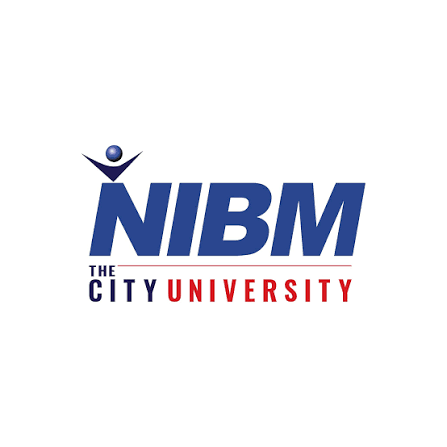

NATIONAL INSTITUTE OF BUSINESS MANAGEMENT (NIBM)
(SRI LANKA'S PREMIER STATE-OWNED / GOVERNMENT EDUCATIONAL INSTITUTE FOR IT & BUSINESS)

HISTORY OF NIBM (STATE / PUBLIC SECTOR INSTITUTE)
- 1968: Established under the Ministry of Industry and Scientific Affairs to train management professionals.
- 1976: Incorporated as a statutory body under the National Institute of Business Management Act No. 23 of 1976.
- 2000s: Expanded degree programs in collaboration with top foreign universities such as Coventry University (UK).
- Present: Functions as a premier semi-government self-financing higher education institution under the Ministry of Education.
AVAILABLE FACULTIES (DEGREE & DIPLOMA PROGRAMS)
- School of Computing & Technology – පරිගණක සහ තාක්ෂණ අධ්යයනාංශය
- School of Business – ව්යාපාර අධ්යයනාංශය
- School of Engineering – ඉංජිනේරු අධ්යයනාංශය
- School of Humanities & Language – මානව ශාස්ත්ර හා භාෂා අධ්යයනාංශය
- National Institute of Design (NID) – නිර්මාණකරණ අධ්යයනාංශය
GO TO OFFICIAL WEBSITE OF NIBM (STATE)
GO TO HOME PAGE